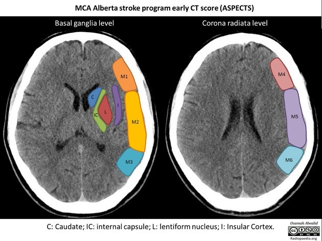

ASPECTS-10 — Alberta Stroke Program Early CT Score
C — Caudate
IC — Internal Capsule
L — Lentiform
I — Insula
M1
M2
M3
M4
M5
M6
🗺 Интерактивная схема ASPECTS (кликни на регион)
📷 Реальная КТ — для наглядности

🖼️
КТ изображение ASPECTS
Положи файл aspects-ct.jpg
в папку img/ проекта
🎯 Шкала ASPECTS-10
Кликай на регионы схемы слева. Поражённые = −1 балл.
10
из 10 баллов
Норма / Минимальные изменения
🎯 Поражённые регионы ASPECTS: 0
Кликни на регион схемы...
📋 Итоговый протокол
ГОЛОВНОЙ МОЗГ:
Паренхима мозга обычной плотности.
Дифференциация серого и белого вещества сохранена.
Боковые желудочки симметричны, не расширены.
Срединные структуры не смещены.
[ASPECTS-10]: 10/10 баллов
Поражённые регионы: не выявлены.
ЗАКЛЮЧЕНИЕ:
Признаков ишемии в бассейне СМА не выявлено.
ASPECTS 10/10 — минимальные изменения, благоприятный прогноз.